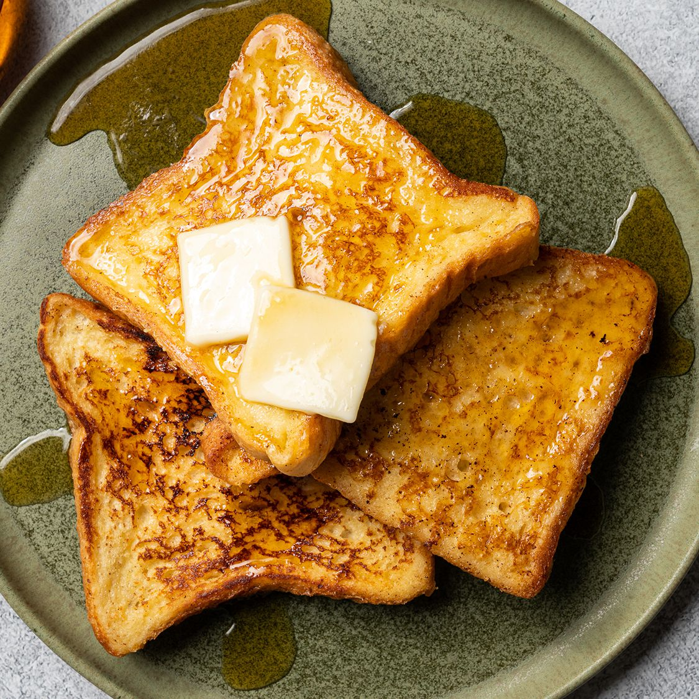
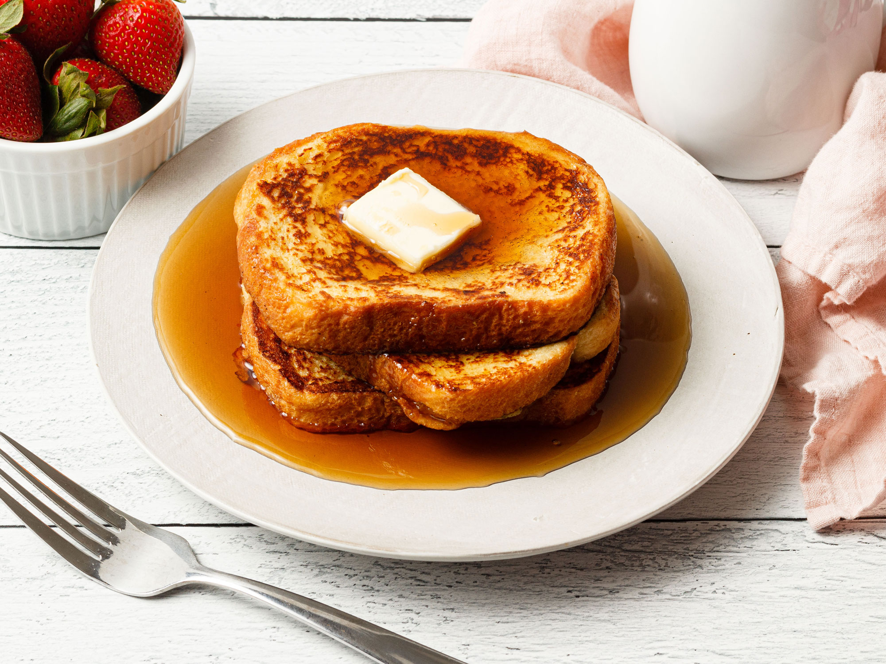
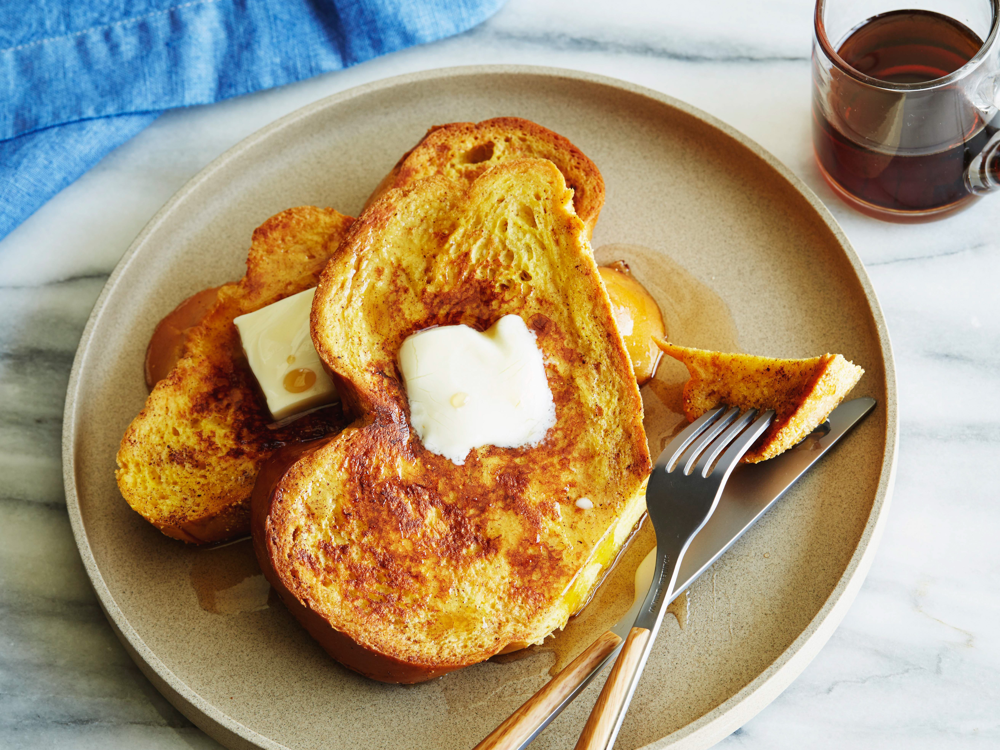

Recipe Blog by Brian
Recipe #3: French Toast
 |
 |
|  |
 |
Ingredients Required:
- White bread
- Eggs
- Milk
- Vanilla
- Cinnamon
- Salt
- Butter
Instructions:
- Add in 2/3 cups of milk, 2 large eggs, 1 teaspoon of vanilla extract, 1/4 teaspoon of cinnamon, and a pinch of salt into a bowl and whisk away
- Add a tablespoon of butter into a skillet and turn on the stove for medium-high heat
- Coat the slices of white bread by dunking them into the mixture and cook it on the skillet until golden brown for about 3 to 4 minutes per side. After that, serve and enjoy!